Jual Floor Deck Harga Murah di Palangkaraya ☎ 0822 4582 0777 (Rinanti)
Salah satu komponen terpenting dari sebuah bangunan baik itu kecil, sedang, besar maupun megah sekalipun pasti memerlukan atap. Tergantung setiap kebutuhannya, bagi bangunan yang megah mungkin beton akan menjadi pilihan. Ini dikarenakan setiap bangunan tentunya membutuhkan atap sebagai penutup bagian atas. Jadi simaklah baik-baik apa saja yang akan saya ulas dalam artikel berikut ini. Ada pula atap galvalum dengan bentuk unik seperti atap lengkung, gelombang dan lain sebagainya.
Distributor & Supplier Floor Deck (Bondex)
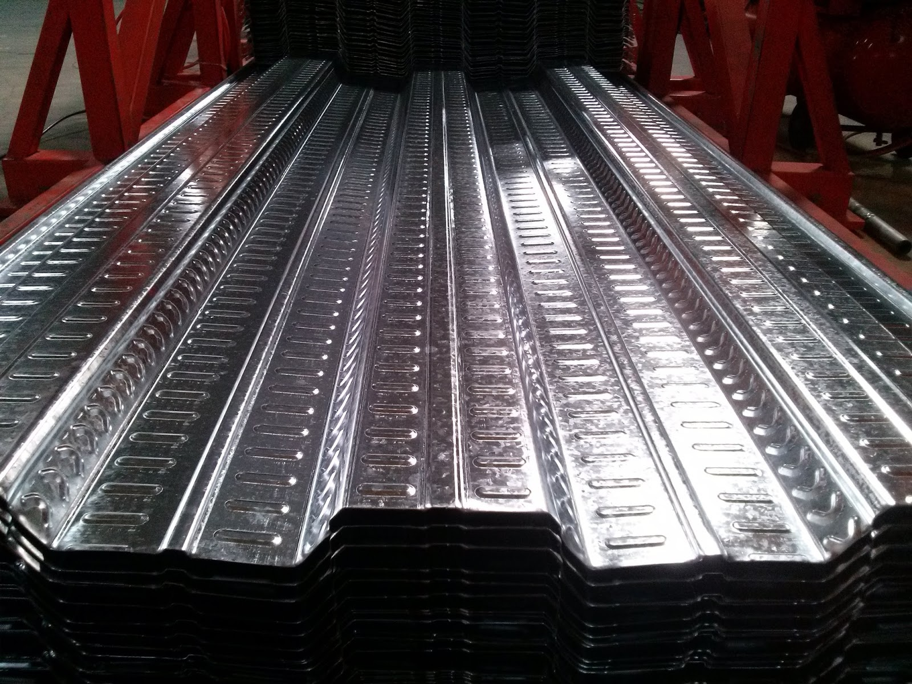
Jika dibandingkan dengan triplek maupun bahan lain yang digunakan untuk membuat sebuah dek, ada beberapa kelebihan Floor Deck yang tidak dimiliki oleh beberapa bahan lain tersebut. Memasang Floordeck berarti memasang bekesting tetap pada areal yang luas dalam waktu singkat dan menghemat pemakaian perancah tiang penyangga. Floor deck merupakan material yang tahan terhadapa api di bandingkan dengan material kayu lainnya. Floordeck atau bondek ini adalah material bangunan yang terbuat dari bahan baja galvanis dengan kekuatan tinggi yang mampu menahan beban struktur pelat yang ada pada lantai. Sedangkan untuk panjang dan juga lebarnya ada beberapa variasi.
Jika anda ingin mengetahui lebih lanjut mengenai floor deck Palangkaraya ini, anda bisa langsung mengunjungi dis.or.id. Disana anda bisa mendapatkan info lebih lengkap dan detail mengenai harga dan spesifikasi dari floor deck Palangkaraya.
Info Pemesanan Selengkapnya
Google Maps: https://www.google.com/maps/d/u/0/viewer?mid=1vSGA7eD7ctB-ierGsro9yf6LdDAQHeLS&ll=-6.2537250295094555%2C106.82745&z=15
Note: https://www.facebook.com/notes/distributor-of-industrial-supply/kontraktor-jasa-floor-hardener/1783168878649658/
Event: https://www.facebook.com/events/534395173592364/
Portfolio Produk: https://www.facebook.com/1681607345472479/photos/?tab=album&album_id=1685055588460988
Distributor & Supplier Besi Beton

Secara umum Besi beton memiliki dua jenis yang dapat diketahui yaitu jenis ulir dan jenis polos. Pendidikan sangat penting karena digunakan dalam berbagai bentuk struktur bangunan baik bangunan kecil maupun bangunan besar seperti jembatan, Bendungan, terowongan dan masih banyak lagi.
Besi beton polos sangat jarang digunakan kecuali digunakan sebagai kolom.
Jika anda saat ini sedang membutuhkan besi beton berkualitas tinggi. Kualitas dan mutunya pun telah terjamin.
Distributor & Supplier Steel Grating
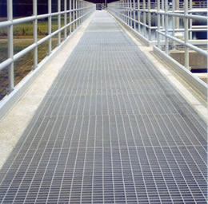
Steel grating sangat aman untuk digunakan pada beberapa kontruksi bangunan. Tetapi, jangan hanya memperhatikan harga karena Anda harus mempertimbangkan kualitasnya terlebih dahulu. Selain untuk keamanan, juga untuk aksesoris kolam renang. Dengan mencaro steel grating kualitas terbaik, pastinya kualitas bangunan yang anda bangun akan lebih kokoh dan tahan terhadap berbagai cuaca. Plat Grating dapat Anda temui dimana saja.
Maka dari itu, jika anda membutuhkan steel grating untuk keperluan pembangunan, anda bisa langsung saja mengunjungi dis.or.id.
Distributor & Supplier Pipa (Hitam/Gas, Galvanis)
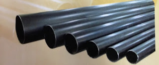
Manfaat dari pipa hitam galvanis memang banyak sekali untuk kebutuhan konstruksi bangunan. Pipa hitam gas galvanis banyak digunakan untuk keperluan area pertambangan minyak gas, untuk itu banyak juga yang mengira pipa hitam ini adalah pipa gas. Karena telah terlapis dengan material stainless steel pipa ini jadi tahan karat dan korosi, sehingga dapat anda aplikasikan untuk segala kondisi cuaca di Indonesia. Ukuran pipa besi hitam terkecil adalah ½ inci, dan paling besar 40 inci. Anda dapat segera menghubungi kami untuk informasi lebih detail mengenai pemesanan pipa hitam.
Distributor & Supplier Kawat Bronjong/Gabion
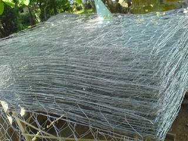
Kawat bronjong dikenal sebagai anyaman yang terbuat dari kawat di mana tujuannya agar tebing yang tinggi tidak longsor. Selain itu, sebenarnya kawat bronjong ini juga bisa dikatakan sebagai pemerkuat bukit. Hanya saja, Anda harus tahu kawat ini terbuat dari baja. Ini biasanya diterapkan pada tebing tinggi yang sangat rawan sekali terjadi longsor atau erosi karena air hujan. Kawat bronjong ini juga biasanya dipasang pada pilar jembatan agar tidak tergerus karena adanya arus air. Tujuannya agar bebatuan tidak hancur karena terkena ombak terus menerus.
Untuk itu, kini kawat bronjong sangat banyak dibutuhkan pada segal bidang. Disan anda bisa mendapatkan informasi tentang kawat bronjong dengan berbagai ukuran dan harga yang pastinya sangat terjangkau. Tak hanya itu, kawat bronjong yang disediakn juga terdapat bermacam ukuran.
Distributor & Supplier WF H-beam
.jpg)
Kekuatan dari besi ini sangat besar dan padat serta kuat dengan daya tekan dan tarik yang tinggi. Di samping itu, kepadatan yang tinggi juga dimiliki oleh besi jenis ini sehingga kualitasnya memang benar-benar terjamin. Sungguh mudah bukan?
Saat membawanya pun Anda akan lebih mudah dan praktis.
Harga yang murah tentunya di dis.or.id juga menjamin kualitas dan mutu terbaiknya juga. Segera kunjungi situs tersebut dan dapatkan penawaran menarik.
Distributor & Supplier Expanded Metal
.JPG)
Expanded metal atau yang dikenal juga dengan grid mesh ini adalah lembaran baja berbentuk jala dengan lubang-lubang yang homogen dan sangat cocok jika digunakan untuk berbagai aplikasi selain dari Pagar BRC. Oleh sebab itu, expanded metal ini diyakini akan bisa lebih tahan lama dan juga lebih kuat. Sedangkan untuk keunggulannya sendiri adalah memiliki bentuk yang indah dan juga homogen, lebih vareatif dalam hal pengaplikasiannya, relatif lebih ringan, dan lebih mudah dipasang.
Kini anda bisa mendapatkan expanded metal dengan kualitas dan mutu yang telah terjamin di dis.or.id. Disana anda bisa menemukan dan memesan langsung expanded metal yang anda butuhkan.
Distributor & Supplier Plat (Hitam, Kapal, Bordes, Strip)

Plat yang satu ini mungkin yang paling banyak kita jumpai, bukan sebagai plat bahan bangunan namun sering digunakan sebagai plat lantai pabrik, kendaraan dan berbagai fungsi lainnya. Plat besi bordes ini saat ini lebih banyak digunakan sebagai bahan pembuatan mobil, terutama mobil pengangkut seperti truk, pick up, dan lain sebagai nya.
Dis.or.id juga menawarkan plat hitam, kapal, bordes dengan ukuran yang telah anda tentukan. Disana terdapat berbagai macam plat yang anda butuhkan dan pastinya dengan harga yang sangat terjangkau. Tak perlu khawatir harga, karena harga yang di patok pastinya sangat murah dan terjangkau.
Distributor & Supplier Atap Galvalum
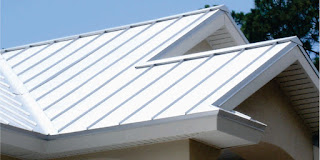
Pada kesempatan ini, kami akan menjelaskan pengertian dari atap seng galvalum. Atap galvalum umumnya dijual dengan sistem per lembar.
Primadona galvalum ini dinilai lebih efektif jika dibandingkan dengan galvanis. Selain memberikan banyak keuntungan, kesan pada rumah anda juga akan terlihat modern. Atap galvalum memang menjadi salah satu incaran atap saat ini dikarenakan galvalum dinilai banyak orang lebih efektif jika dibandingkan dengan galvanis.
Bahkan, setiap rumah khususnya di perumahan sudah banyak yang menggunakan atap galvalum sebagai teras khusus ntuk mobilnya. Anggapan ini sangat keliru, karena galvalum bukanlah atap seng pada umumnya. Ini dikarenakan seng menyebabkan rumah anda menjadi terasa panas. Karena galvalum mempunyai daya tahan karat 4x dari galvanis. Jenisnya yang beragam dan banyak ukuran yang dapat disesuaikan mampu memenuhi kebutuhan anda. Perbedaan ukurannya terletak pada panjang, lebar dan tebalnya.
Distributor & Supplier Atap Lengkung
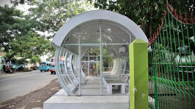
Dewasa ini, atap terbuat dari berbagai bahan yang sangat terkomposisi. Fungsi atap ialah untuk menutupi seluruh bagian atas dari sebuah bangunan.
Sifat fleksibelnya dan modelnya yang unik membuatnya dapat dijadikan atap berbagai bangunan. Salah satu jenisnya adalah atap lengkung. Sehingga membuat jenis atap tersebut mempunyai kelebihan dan kekurangannya sendiri.
Karena apabila atap tersebut sudah tertembus oleh air. Nah, atap lengkung inilah yang berjasa membuat stadion tersebut terlihat megah. Anda sudah berada di tempat yang tepat. Maka anda akan mendapatkan penawaran dengan harga terjangkau. Karena kami adalah tangan pertama yang bertindak sebagai supplier, toko sekaligus distributor.
Distributor & Supplier Truss Canal C
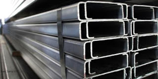
Sebagai informasi untuk anda, bahwa besi kanal C ini di kalangan para pekerja bangunan juga kenal dengan nama Besi CNP. Tidak heran bila saat ini besi ini lebih banyak diminati, selain karena mudah didapatkan, memiliki kekuatan yang sama, tahan lama juga karena harga yang dinilai lebih ekonomis. Besi ini tidak dibuat oleh tukang las biasa, melainkan di olah oleh pabrik yang khusus bergerak dibidang peleburan besi dan logam. Namun karena semakin susahnya mendapatkan raw materialnya, dan harga yang semakin ahal maka pemilihan besi kanal C menggantikan fungsi kayu dinilai adalah langkah yang tepat.
Distributor & Supplier Hollow Galvalum
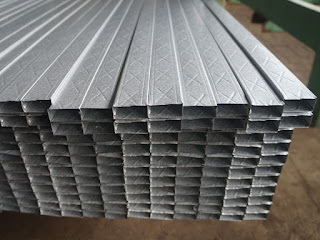
Kayu pun sudah digeser, dikarenakan keberadaan hollow galvalum ini. Untuk memudahkan pemasangan atap, tentunya diperlukan hollow galvalum yang berkualitas bukan?
Bila anda ingin membeli Hollow galvalum dengan harga terjangkau dan tentunya kualitas terjamin, simak ulasan kami ini. Ukuran hollow galvalum plafon yang paling bagus untuk digunakan yaitu ukuran 2X4 dengan tebal 0,25. Jika anda berencana membangun sebuah plafon, saran saya pilihlah ukuran yang saya sebutkan diatas. Studi penelitian telah mengungkapkan bahwa kerangkan plafon menggunakan jenis hollow ini bisa bertahan puluhan tahun. Mengapa kami bisa menjual lebih murah? Karena kami adalah distributor resmi dari pabrik, sehingga anda akan mendapatkan harga pabrik langsung dari kami. Bukan harga agen ataupun perantara lainnya. Tertarik untuk membeli? Hubungi kami sekarang juga, karena kami memiliki penawaran menarik untuk anda.
Distributor & Supplier Seng Gelombang
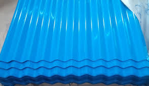
Seiring perkembangan jaman, seng gelombang mengalami peningkatan dari waktu ke waktu. Andapun wajib memperhatikan bagaimana atap bagian bangunan tersebut apakah berkualitas ataukah tidak, atap dengan kualitas rendah akan beresiko kerusakan maupun kebocoran yang pasti merugikan seisi bangunan ruangan tersebut. Seng gelombang sekarang ini diburu banyak masyarakat untuk menutup bagian atap bangunan mereka. Ia lebih mudah di pasang dan harga jual yang ekonomis dipasaran membuat seng gelombang memiliki banyak peminat. Pemasangan seng pada atap rumah haruslah dibantu dengan kerangka kayu, atau bisa juga anda memanfaatkan kerangka galvalum yang kini sudah bermunculan di masyarakat dan lebih unggul di banding kerangka kayu sendiri.
Tetapi, janganlah ragu dengan hal demikian.
Distributor & Supplier Plat Seng
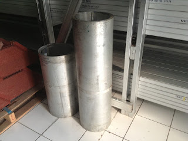
Namun tahukah anda berapa ukuran yang banyak dicari orang? Berbicara ukuran, plat galvanis atau seng galvanis memiliki banyak sekali jenis ukuran.
Banyak orang yang selama ini hanya membeli seng galvalum tanpa mengetahui ukuran yang sesuai dengan kebutuhan nya. Namun apabila anda membutuhkan nya hanya sedikit, misal untuk penyambungan, atau ingin mengganti beberapa bagian talang rumah anda, anda dapat membeli yang per meter saja. Selain lebih hemat, juga anda tidak harus membuang bagian yang tersisa. Harga plat galvanis lembaran tentu nya akan lebih mahal jika dibandingkan yang per meter.
Distributor & Supplier Genteng Metal
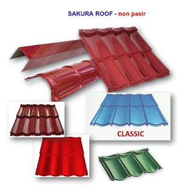
Genteng metal banyak dipilih karena memang lebih tahan lama, anti bocor, tidak berjamur, kesan yang diberikan pada atap rumah menjadi elegan dan indah selain itu juga karena harga yang lebih ekonomis. Berbicara tentang genteng metal memang akan identik dengan perbandingan metal vs keramik. Selain itu genteng metal dinilai lebih anti bocor. Secara sederhana genteng metal adalah salah satu jenis genteng yang terbuar dari kumpulan berbagai bahan logam dan memiliki ciri kas mengkilat, ringan dan tahan lama. Dengan berbagai keunggulan yang sudah saya jabarkan diatas, maka apalagi yang anda tunggu untuk mendapatkannya? Segera dapatkan genteng metal tersebut di official situs kami di dis.or.id dan dapatkan penawaran menarik. Memang saran terbaik ketika anda ingin menggunakan atap dari genteng metal adalah gunakan jenis genteng metal pasir terbaik. Jika anda masih agu lagi, kami sarankan untuk anda untuk mengubungi kami secara langsung.
Silahkan hubungi kami untuk informasi lebih lanjut. Bila belum percaya, maka anda dapat mengujungi situs official kami di dis.or.id untuk mendapatkan info yang lebih lanjut dan dapatkan penawaran terbaik dari kami khusus untuk anda.
Distributor & Supplier Besi Wiremesh
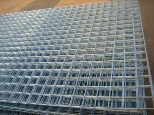
Banyak orang yang menganggap wiremesh ini dengan sebutan besi anyam. Bentuk anyaman dari besi wiremesh sendiri bermacam-macam, ada yang membentuk kotak-kotak ada juga yang jajar genjang, anda dapat memilih sesuai kebutuhan. Untuk kepentingan konstruksi, besi wiremesh diaplikasikan untuk keperluan anak tangga, plat lantai, dan penguat dak beton. Jika anda hendak mengaplikasikan besi wiremesh, maka tentukan dulu kebutuhannya sehingga bisa menentukan jenis wiremesh mana yang cocok untuk diaplikasikan. Besi wiremesh terdiri dengan berbagai macam ukuran ketebalan, ketebalan 8 – 10 digunakan untuk bangunan bertingkat. Sedangkan wiremesh ukuran 4 sampai 6 untuk kebutuhan bangunan biasa. Kami disini menawarkan besi wiremesh dengan kualitas terbaik, di produksi dengan sistem las otomatis sehingga kuat dan susunannya rapi. Untuk anda yang membutuhkan besi ini maka hubungi kontak yang tersedia.
Distributor & Supplier Pagar BRC
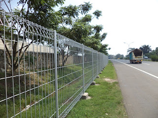
Pagar BRC dibuat dari besi beton berukuran diameter 5 mm – 8 mm sehingga tergolong kuat sebagai pagar pengaman. Setiap potongan besi tersebut kemudian digabungkan dengan bantuan mesin las wiremesh. Pemanfaatan pagar BRC sendiri tergolong sebagai pagar minimalis yang siap digunakan untuk melindungi sebuah bangunan. Apalagi mengingat kekuatan pagar BRC tidak dapat diragukan lagi, karena pagar ini diproduksi dengan baja bertegangan tinggi U55 grade dengan tegangan ijin 2900kg/cm2 sekitar 2. 5 kali dari kekuatan besi biasa. Anda dapat mengunjungi situs resmi kami di www.dis.or.id, karena pada situs ini terdapat informasi detil mengenai spesifikasi ukuran dan harga.
Distributor & Supplier Kawat Loket, Kawat Harmonika
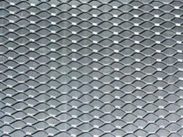
Dengan bentuknya seperti anyaman yang kokoh, anda dapat memanfaatkan kawat loket harmonika untuk berbagai keperluan. Apalagi bila anda membeli jenis kawat loket harmonika yang sudah terlapisi dengan galvanis sehingga ia awet dan tahan terhadap korosi. Anda dapat memesan kawat loket harmonika yang terlapis dengan galvanis untuk kualitas terbaik yang tahan korosi. Untuk informasi selengkapnya, anda dapat menghubungi kami, terlah tersedia kawat loket harmonika dengan diameter 1,5 mm – 4 mm, disertai lubang 20 mm sampai 70 mm tergantung dengan kebutuhan anda.
Distributor & Supplier CNP & UNP

Besi yang sering diaplikasikan untuk keperluan sambungan dan dudukan atap adalah besi kanal UNP, bentuk besi ini melengkung dan membentuk huruf U. Selain sebagai sambungan, besi kanal UNP ini juga cocok dimanfaatkan untuk keperluan girts dan penutup sebuah dinding. Spesifikasi dari besi UNP sendiri sebenarnya hampir sama dengan besi WF, hanya saja besi UNP lebih mudah melengkung untuk itu sangat jarang pengaplikasiannya pada kolom bangunan. Membahas mengenai besi UNP pasti terasa kurang jika tidak membahas kembarannya pula, besi CNP. Jika besi UNP memiliki bentuk melengkung membentuk huruf U, besi CNP memiliki bentuk melengkung membentuk huruf C. Besi CNP dan UNP ini sangat fleksibel, ia bahkan dapat dimodifikasi dengan plat koil yang menggunakan sistem cutting, sehingga tak heran bila banyak orang memesan jenis besi ini.
Distributor & Supplier Besi Siku
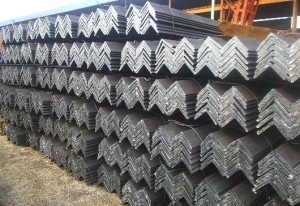
Setiap konstruksi bangunan pasti menggunakan material konstruksi besi siku ini untuk kebutuhan bagunan. Besi siku sangat dapat diandalkan untuk kebutuhan sebagai besi penyangga. Dilihat dari namanya saja, sudah jelas jika besi siku merupakan besi logam yang berbentuk dua garis tegak lurus membentuk 90 derajat. Ukuran panjang dari besi siku yang kami sediakan adalah panjang 6 meter, dan ketebalan yang bisa anda sesuaikan dengan kebutuhan. Anda dapat mengunjungi situs resmi kami untuk info pemesanan besi siku selengkapnya! Telah tersedia besi siku dengan berbagai ukuran yang bisa anda pesan. Anda dapat manfaatkan produk besi siku dari perusahaan kami untuk keperluan industi, otomotif, bangunan, furnitur, konstruksi dan sebagainya. Segera hubungi kontak kami untuk mengetahui spesifikasi besi siku yang anda butuhkan.
Distributor & Supplier Hollow (Hitam, Galvanil, Galvanis)

Sekarang ini besi hollow pemanfaatannya sudah melebihi kayu, meskipun terbuat dari besi kualitasnya pun tidak dapat diragukan lagi.Sekarang sudah banyak orang yang beralih pemanfaatan dari kayu menjadi menggunakan besi hollow.Banyak orang yang mulai beralih dari pemanfaatannya yang menggunakan kayu beralih pada hollow hitam galvanil.Besi hollow saat ini menjadi material pengganti kayu yang sangat baik. Dengan menggunakan material ini pembangunan konstruksi juga bisa selesai lebih cepat sehingga meminimalkan upah pekerja. Terdapat besi hollow dengan berbagai ukuran yang bisa anda pesan langsung, misalnya: ukuran besi hollow 40 x 40 x 2 mm x 6 Meter, 50 x 50 x 3 mm x 6 meter hingga ukuran 150 x 150 x 5 mm x 6 meter.Segera hubungi kontak kami untuk info lebih lanjut. anda dapat memesan besi hollow hitam galvanil galvanis tersebut dengan berbagai ukuran, baik ukuran besi hollow 40 x 40 x 2 mm x 6 Meter, 50 x 50 x 3 mm x 6 meter sampai dengan ukuran 150 x 150 x 5 mm x 6 meter. Kami menyediakan besi hollow hitam dengan ukuran 40, 50, 150 dan lain sebagainya dengan panjang rata-rata 6 meter. Untuk anda yang membutuhkan besi ini, kami menyediakan ukuran besi hollow yang variatif 40 x 40 x 2 mm x 6 Meter, 50 x 50 x 3 mm x 6 meterr sampai dengan ukuran 150 x 150 x 5 mm x 6 meter. Jika anda tertarik memesan besi hollow ini maka tentukan dulu total kebutuhan anda, hubungi kami segera untuk info lebih lanjut!Selain sebagai pengganti material kayu, besi hollow yang kami jual dapat anda manfaatkan untuk kepentingan teralis, pintu besi, pagar, dan lain sebagainya.Bagi anda yang membutuhkan besi hollow, anda dapat menghubungi kami, besi hollow yang kami tawarkan cocok untuk kebutuhan pagar, pintu besi, teralis, dan lain sebagainya.Selain sebagai pengganti material kayu, besi hollow banyak dimanfaatkan untuk kebutuhan pintu besi dan teralis.
Distributor & Supplier Pipa Pancang

apalagi mengingat banyak yang mencarinya karena memang memiliki fungsi yang sangatlah bermanfaat. sedangkan untuk ukuran maupun spesifikasi yang di sediakan pun berbeda-beda sehingga Anda bisa dengan mudah menyesuaikannya. sedangkan dari segi spesifikasi maupun ukuran, pipa pancang cukup variatif dan bisa di sesuaikan dengan kebutuhan. apalagi jika yang di katakan adalah di industri DIS ini. Terutama untuk memilih produk DIS. Sedangkan untuk kualitas pipa pun akan sangat terjamin dengan mutu terbaik.
Jasa Pondasi Bor (Strouss/Borepile)
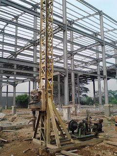
Hal ini karena sudah tersedia layanan jasa yang menawarkan pondasi bor. Selanjutnya, untuk masalah di mana jasa ini bisa di temukan, maka Anda bisa memesannya di sini dengan mudah. untuk kualitasnya pun tidak perlu di pertanyakan lagi karena dengan jasa profesional yang lebih berpengalaman ini, pengeboran akan semakin terjamin. Namun perlu di ketahui pula bahwasanya selama proses akan memunculkan suara bising sekalipun tanpa getaran. Dalam prosesnya, pengeboran ini akan menimbulkan suara bising karena mesinnya yang sedang bekerja. Dalam hal ini jika tidak ingin menggunakan jasa bor, Anda bisa membeli mesinnya. Selain penggunaan jasa pondasi bor, Anda bisa memiliki mesin sendiri. sedangkan dari segi kualitas pun keduanya tidak jauh berbeda.
Distributor & Supplier Genset (New/Second)

Sejauh ini, genset atau generator set uang sudah banyak di aplikasi kan dengan bahan bakarnya yang berupa solar tentu saja juga sudah cukup terkenal. genset ini merupaka produk yang menggunakan bahan bakar solar sehingga bisa menghasilkan tenaga listrik. Dalam penjualan nya, genset ini biasanya ada dua pilihan yaki dalam kondisi baru maupun second atau bekas. Sedagkan keduanya, bisa Anda temukan di DIS.
Oleh karena itu tidak sedikit yang memilih membeli genset bekas. Bagaimana tidak, jika kualitas yang di tawarkan saja hampir sama sedangkan harganya lebih rendah. Dengan demikian Anda bisa menyesuaikan dengan kebutuhan maupun keuangan.
Distributor & Supplier UPS
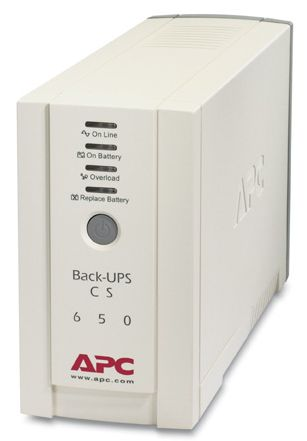
Kalau menyebut UPS, mungkin akan banyak yang bertanya-tanya sebenarnya apa sih barang yang satu ini. Sedangkan untuk pengertiannya, UPS merupakan salah satu alat elektro yang berfungsi untuk menyimpan tenaga listri sehingga listrik tetap bisa menyela sementara ketika sumber utama terptus. Dalam hal ini tentu cukup penting memilikinya. UPS ini terdiri dari beberapa jenis. Termasuk juga kualitas barang dan kapasitas listrik yang si hasilkan. oleh sebab itu, jika memang ingin membeli UPS, silahkan Anda menyesuaikan dengan bagaimana kebutuhan Anda. Sedangkan untuk memiliki UPS berkualitas, Anda bisa merujuk pada DIS.
Distributor & Supplier Forklift (Second)
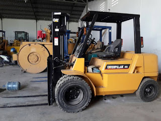
Termasuk untuk forklif yang dalam kondisi bekas. Sedangkan di sini, Anda bisa menemukan penjualan tersebut dengan kualitas barang yang memuaskan sekalipun merupakan barang second. Nah, jika Anda sedang mencari bekas pun di DIS juga bisa di dapatkan. Nah, mengingat kualitasnya yang terjamin, maka akan semakin memudahkan berbagi aktifitas industri pengguna nya. Jika sudah mengetahui kualitasnya yang terjamin tersebut, tentu saja segala aktifitas industri akan menjadi semakin mudah lagi. Selanjutnya, jika forklif sudah tidak di gunakan, Anda pun bisa kembali menjualnya pada setiap distributor forklif sehingga tidak akan rugi membelinya.
Jasa Pembuatan Moulding Inject
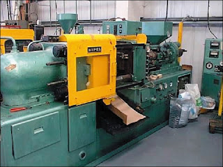
Bagi Anda yang sedang bingung membuat moulding inject, jangan khawatir karena disini pun tersedia penawaran jasa untuk membuatnya. Selain itu, masalah kualitas pun juga tidak kalah karena moulding inject yang di hasilkan memiliki kualitas terbaik. Tidak hanya terbatas pada kuantitas, akan tetapi, juga kualitas moulding inject ini sangatlah terjamin mutunya. Apalagi jika Anda kebingungan masalah ide, jangan khawatir karena banyak pilihan yang bisa di jadikan inspirasi. Jadi tinggal menyesuaikan saja dengan kebutuhan Anda sehingga pembuatannya bisa benar-benar pas.
Jasa Pembuatan Sparepart Mesin Produksi / Alat Berat
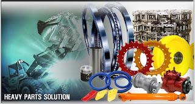
Sparepart tentu saja sudah tidak asing lagi di dunia permesinan. terkait akan hal itu, bisa di akui pula bahwa pembuatan mesin ini sangat penting untuk menjadi perhatian. Karena itulah, untuk memilikinya, silahkan Anda memilih jasa terpercaya di mana salah satunya di tawarkan di DIS. Salah satunya adalah sebagaimana yang di tawarkan industri DIS. Terkait dengan hal itu, perlu Anda ketahui bahwa pembuatan sparepart yang salah, bisa jadi akan membahayakan si pengguna. Sedangkan harga penawaran, untuk setiap alat berat bisa berbeda tergantung jenis dan ukurannya. Semakin baik spesifikasi nya, tentu akan semakin mahal.
Jasa Service Elektronik (Kompor Gas, Dispenser, Mesin Cuci)

Kini elektronik memang semakin banyak di gunakan di kalangan masyarakat. mengimbangi akan hal itu, jasa service pun juga kian menyebar di mana-mana. Dengan service ini, maka ketika ada masalah dengan barang Anda, jika belum parah bisa kembali berfugsi seperto semula. Kalau berbicara masalah kualitas, jangan khawatir karena DIS menyediakan service handal yang akan melakukan perbaikan sempurna. Nah, selain perbaikan sebenarnya dalam service Anda bisa juga sekedar melakukan pengecekan terhadap barang elektronik Anda yang di gunaka sehari-hari sehingga tetap aman dan nyaman. Nah, apa pun barang yang perlu di perbaiki, kini akan kembali berfungsi seperti semula. Melainkan untuk sekedar pengecekan setelah sekian lama pun bisa. Hanya saja kebanyakan orang memang melakukan service elektronik saat ada keluhan yang di rasakan saja.
Banyak manfaat yang bisa didapatkan hanya dengan memasang atap sebagai peneduh bangunan anda. Atap memang adalah kebutuhan primer bagi setiap bangunan. Sudahkah anda mengerti akan manfaat atap yang sudah pasti kita butuhkan? Silakan kunjungi dis.or.id untuk informasi lebih lanjut dan dapatkan penawaran yang sesuai dengan kebutuhan anda. Dengan senang hati, kami akan memberikan solusi untuk setiap kebutuhan dan keperluan anda. Jadi bila anda tertarik dalam mencari berbagai jenis atap dan bingung dalam memilih. Kunjungi dis.or.id untuk mendapatkan bantuan, info dan penawaran terbaik khusus untuk anda.